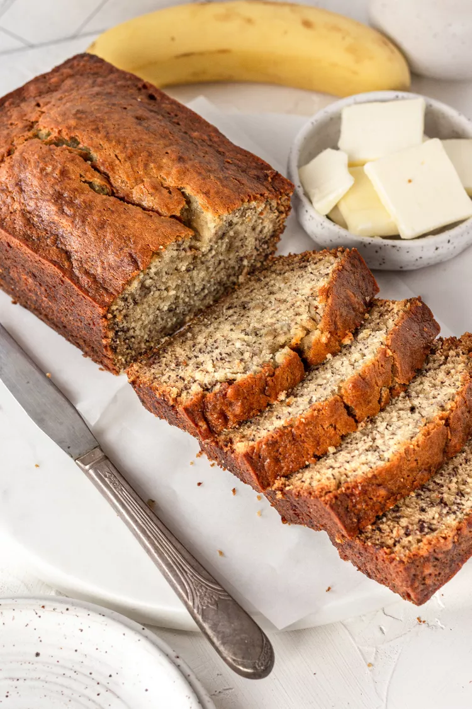

Banana Bread
A picture of delcious banana bread.
This recipe is for a simple banana bread. No seed oils or banana flavoring
extracts. Lots of bananas and lots of butter.
Ingredients
- 2 to 3 medium (7" to 7-7/8" long) very ripe bananas, peeled (about 1 1/4 to 1 1/2 cups mashed)
- 1/3 cup (76g) butter, unsalted or salted, melted
- 1/2 teaspoon baking soda (not baking powder)
- 1 pinch salt
- 3/4 cup (150g) sugar (1/2 cup if you would like it less sweet, 1 cup if more sweet)
- 1 large egg, beaten
- 1 teaspoon vanilla extract
- 1 1/2 cups (205g) all-purpose flour
Steps:
- Preheat the oven to 350°F (175°C): Butter an 8x4-inch loaf pan.
-
Mash the bananas and add the butter: In a mixing bowl, mash the ripe bananas
with a fork until completely smooth. Stir the melted butter into the mashed bananas.
-
Mix in the remaining ingredients: Mix in the baking soda and salt. Stir in the
sugar, beaten egg, and vanilla extract. Mix in the flour.
- Bake the bread for 55-65 minutes at 350°F
- Cool and serve.